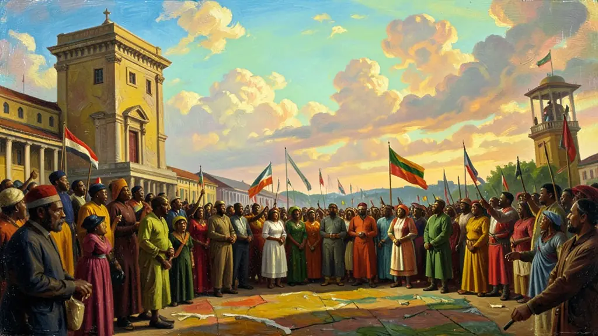
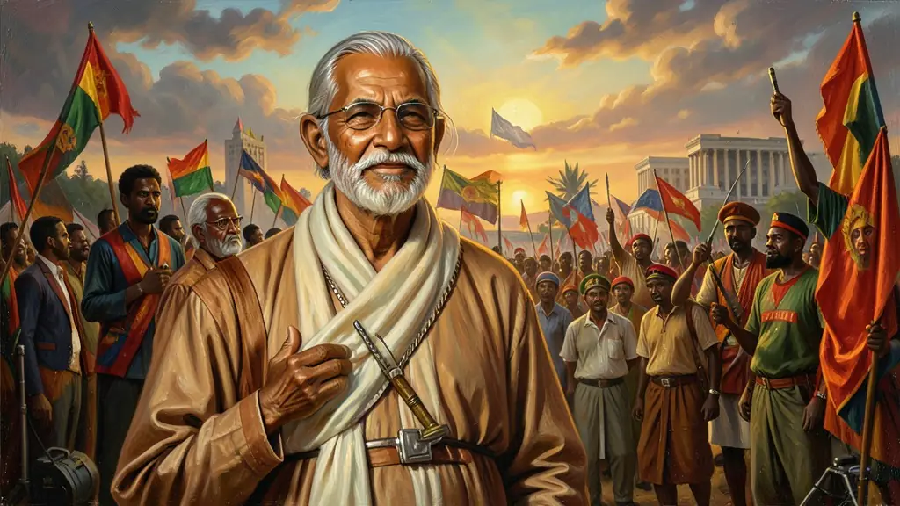
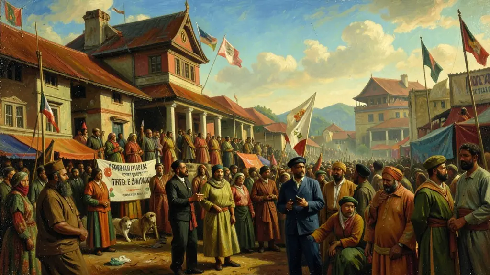

Capítulo 01
1. O Declínio Europeu e a Janela da Liberdade
A Europa que deu as cartas no século XIX saiu de 1945 em ruínas. A Inglaterra e a França não tinham mais exércitos nem dinheiro para conter as revoltas nas colônias. Além disso, muitos africanos e asiáticos haviam lutado nas frentes de batalha da 2ª Guerra e voltaram perguntando: 'Por que lutamos pela liberdade da Europa se não temos liberdade em nossa própria casa?'. O mito da superioridade europeia estava quebrado.

Capítulo 02
2. Mahatma Gandhi e a Força da Verdade
Mohandas Gandhi inventou uma nova arma: a Desobediência Civil. Ele dizia que se 300 milhões de indianos parassem de obedecer, os ingleses não teriam como governar. Boicotando tecidos ingleses (ele mesmo fiava sua roupa) e marchando contra o imposto do sal, Gandhi provou que a paz pode derrubar impérios. A Índia dividiu-se depois em Índia (hindu) e Paquistão (muçulmano), uma ferida aberta pelos ingleses na saída do país.

Capítulo 03
3. Bandung e o Nascimento do Terceiro Mundo
Líderes como Nasser (Egito), Nehru (Índia) e Sukarno (Indonésia) reuniram-se em Bandung para dizer 'Não' tanto ao capitalismo americano quanto ao comunismo soviético. Eles queriam os problemas da África e da Ásia resolvidos por africanos e asiáticos. Ali nasceu a solidariedade entre os povos colonizados, denunciando o imperialismo como um crime contra a humanidade.

Capítulo 04
4. Guerras de Libertação: Argélia e África Portuguesa
A França considerava a Argélia como parte de seu próprio território e lutou por 8 anos em uma guerra urbana brutal. Em Angola e Moçambique, a ditadura de Salazar em Portugal negou qualquer negociação, forçando os movimentos de libertação (MPLA, FRELIMO) a pegarem em armas. Essas guerras só pararam quando os próprios militares portugueses derrubaram sua ditadura em 1974, garantindo a independência das colônias.
Capítulo 05
5. O Apartheid e a Vitória de Nelson Mandela
Na África do Sul, a minoria branca (Africâners) criou o sistema mais racista do mundo. O Apartheid separava praças, escolas e até bairros por cor de pele. Os negros não tinham direito ao voto e eram obrigados a portar um 'passe'. Nelson Mandela, preso por 27 anos, tornou-se o símbolo mundial dessa resistência. Em 1994, ele foi eleito presidente, unificando o país sob o lema da 'Nação Arco-Íris'.
O período de descolonização Afro-Asiática do pós-Segunda Guerra é frequentemente retratado como o triunfo derradeiro das democracias contemporâneas, embora tenha sido na realidade, para vastas regiões do Terceiro Mundo, batalhado palmo-a-palmo de guerrilhas nativistas, nacionalistas e revolucionárias. O empobrecimento demográfico da 'Europa Potência Imperialista' evidenciou o mito de sua incólume superioridade frente à população congolesa, indonésia, argelina e vietnamita que lutaval de forma veemente com a herança pan-africana em ebulição.
Enquanto a Índia lograria uma descolonização predominantemente por meio da tática pacifista gandhiana do 'Satyagraha', como resistência à exploração indiana centenária do Raj britânico – e cujas dolorosas fraturas religiosas produziriam os Estados teocráticos do Paquistão –, na Argélia (sob a ocupação francesa da Argélia-Metropolitana) e nas colônias portuguesas de Angola, Moçambique e Guiné-Bissau o desmantelamento das cruentas engrenagens raciais colonizadoras não se fez sem o auxílio retumbante da baioneta nativa armada (marxista na maioria de suas facções revolucionárias).
É inquestionável nos testes avaliativos acadêmicos a premente cobrança acerca do documento que inaugurou a diplomacia Sul-Sul da neutralidade face à Guerra Cósmica bipolarizada (USA x URSS) - a Conferência de Bandung (1955). Sobretudo, resguardando os aspectos ideológicos de teóricos e guerrilheiros como Frantz Fanon ou Patrice Lumumba frente à chaga abissal do neocolonialismo; a nova opressão exercida não mais fisicamente, mas pela brutal usurpação financeira-cultural e desigualdade no comércio das instâncias do mundo contemporâneo pós-independência pacífica ou violenta.
Fonte: FANON, Frantz. Os Condenados da Terra. Rio de Janeiro: Civilização Brasileira, 1968.
Atividades interativas
Questões para fixar
A Conferência de Bandung, realizada em 1955 na Indonésia, foi um marco importante na geopolítica do século XX. Qual foi o principal resultado dessa reunião?
Mahatma Gandhi utilizou uma estratégia específica para combater o domínio britânico na Índia. Qual era essa estratégia?
Qual foi o evento que marcou a criação do conceito de Não-Alinhamento e condenou o racismo e o colonialismo?
Qual foi o método utilizado por Mahatma Gandhi para conquistar a independência da Índia?
Qual foi o regime que durou até a década de 1990 na África do Sul e foi caracterizado pela segregação racial institucionalizada?